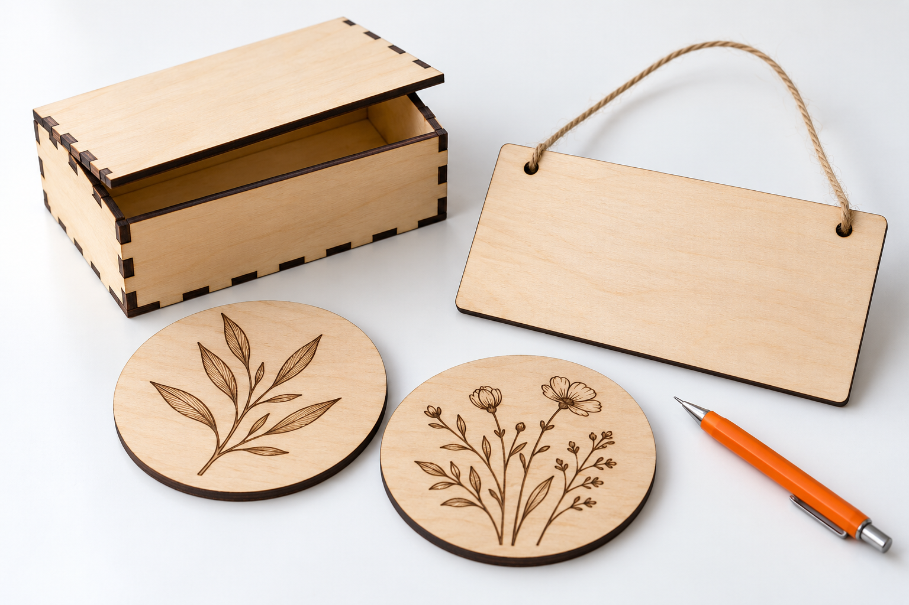

Working with wood
Basswood gives pale engraving backgrounds; birch plywood suits assembled parts; walnut and cherry provide a darker decorative finish. Grain, glue, moisture, and surface treatments change the outcome even when two boards have the same nominal thickness.
Choose wood for the finished object
Pick the stock for the design and its intended use, then check the supplier's complete material information. Grain, adhesive, veneer and actual thickness can matter as much as the species name.
| Wood or sheet | Useful project direction | What to check |
|---|---|---|
| Basswood | Simple engraving, tags and first cut samples | Flatness, actual thickness and contrast on a small sample |
| Birch plywood | Assembled panels, boxes and repeated parts | Adhesive, voids and whether the reference is for this plywood construction |
| Walnut or cherry | Decorative gifts and visible wood grain | Engraving contrast against the darker surface |
| MDF or composite board | Only when the exact product is documented as suitable | Binder, coating and supplier approval; no MDF row in this page's lookup |
Find wood settings for your L2
Choose your wood, laser module, and operation. Results show the matching entries from the TOOCAA L2 material table, including the tested thickness.
Select a combination to find a matching L2 setting, or use the table below.
Use a small test piece from your material batch. Settings for birch do not cover every type of birch plywood. Unlisted combinations have no calculated substitute.
Check the material before processing
Check the sheet is flat, identify the wood and adhesive, and measure the actual thickness. Select laser-compatible stock with information from its supplier. A decorative veneer or treated board needs separate checking from solid unfinished wood.
Prepare a useful test
A material test is useful only when it represents the final job. Use the same sheet or batch, record the laser module and software units, and change one setting at a time. Keep the sample after the job so you can compare a later delivery against it.
- Cut a small square and an internal circle before a detailed design.
- Engrave a small text sample across the grain and compare its contrast.
- Measure a slot and tab pair after cutting to account for kerf.
- Save the sheet supplier, thickness, module, speed units, and result.
Inspect the result
A dark face usually calls for checking smoke extraction, flatness, focus, and excessive dwell. If one area stays attached, inspect the board for voids or glue pockets instead of repeatedly burning the same spot.
Choose settings for the exact machine
Use the manufacturer's material table for the exact laser module and processing mode. Speed in mm/min is not the same as mm/s, and an engraving row is not a cutting instruction. If the material, thickness, or surface does not match a published entry, treat it as an undocumented combination and seek model-specific guidance before continuing.
These settings are for the TOOCAA L2 configurations listed below. Match the material, thickness, module, and operation, then test an offcut before starting your project. For NOVA, use the settings in the NOVA documentation. All speeds below are in mm/min.
| Material | Module | Thickness | Operation | Power | Speed | Passes |
|---|---|---|---|---|---|---|
| Basswood | 10W | 2 mm | Engraving | 40% | 3000 mm/min | 1 |
| Basswood | 10W | 4 mm | Cutting | 100% | 200 mm/min | 1 |
| Basswood | 10W | 5 mm | Cutting | 100% | 150 mm/min | 1 |
| Basswood | 20W | 2.8 mm | Engraving | 40% | 24000 mm/min | 1 |
| Basswood | 20W | 2.8 mm | Cutting | 100% | 500 mm/min | 1 |
| Birch | 20W | 3 mm | Engraving | 80% | 24000 mm/min | 1 |
| Birch | 20W | 3 mm | Cutting | 100% | 400 mm/min | 1 |
| Walnut Wood | 20W | 3.6 mm | Engraving | 80% | 21000 mm/min | 1 |
| Walnut Wood | 20W | 3.6 mm | Cutting | 100% | 400 mm/min | 1 |
| Red Cherry Wood | 20W | 3.2 mm | Engraving | 20% | 24000 mm/min | 1 |
| Red Cherry Wood | 20W | 3.2 mm | Cutting | 100% | 700 mm/min | 1 |
| Basswood | 40W | 2.8 mm | Cutting | 100% | 600 mm/min | 1 |
| Birch | 40W | 3 mm | Cutting | 100% | 600 mm/min | 1 |
Wood project ideas

- Use Cases
Home Decor
Plan layered wall art, coasters, decorative panels, and ornaments with material selection, joinery tests, and practical finishing checks.
Read guide → - Use Cases
Personalized Gifts
Make engraved name tags, keepsakes, and small gift sets with legible artwork, confirmed personalization, and a consistent finish.
Read guide → - Use Cases
Gift Packaging
Prototype gift boxes, presentation inserts, sleeves, and tags with measured fits, simple assembly, and repeatable layouts.
Read guide →